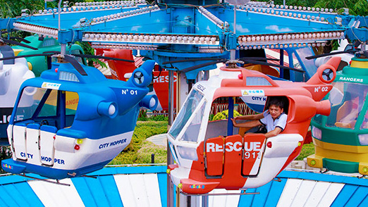

信息标题
2014年12月25号

小企鹅啵乐乐（Pororo），是韩国国宝级卡通人物，其主要作品载体是一部以3-6岁幼儿为核心对象的轻松益智型3D动画片《Pororo the Li 小企鹅啵乐乐（Pororo），是韩国国宝级卡通人物，其主要作品载体是一部以3-6岁幼儿为核心对象的轻松益智型3D动画片《Pororo the Li 小企鹅啵乐乐（Pororo），是韩国国宝级卡通人物，其主要作品载体是一部以3-6岁幼。